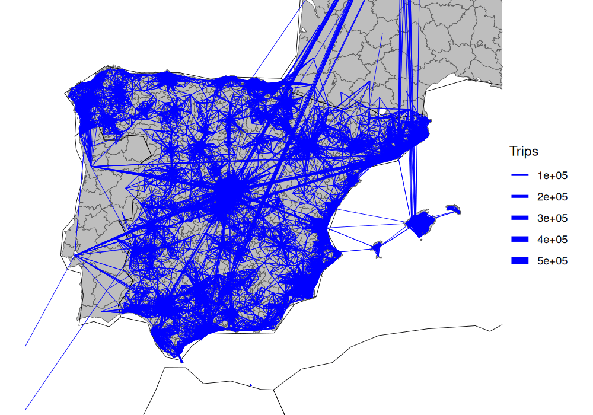

spanishoddata is an R package that provides functions for downloading and formatting Spanish origin-destination (OD) data from the Ministry of Transport and Sustainable Mobility of Spain.
It supports the two versions of the Spanish OD data. The first version covers data from 2020 and 2021, including the period of the COVID-19 pandemic. The second version contains data from January 2022 onwards and is updated monthly on the fifteenth of each month. Both versions of the data primarily consist of mobile phone positioning data, and include matrices for overnight stays, individual movements, and trips of Spanish residents at different geographical levels.
spanishoddata is designed to save people time by providing the data in analysis-ready formats. Automating the process of downloading, cleaning, and importing the data can also reduce the risk of errors in the laborious process of data preparation. It also reduces computational resources by using computationally efficient packages behind the scenes. To effectively work with multiple data files, it’s recommended you set up a data directory where the package can search for the data and download only the files that are not already present.
Install the package as follows:
if (!require("remotes")) install.packages("remotes")
remotes::install_github("Robinlovelace/spanishoddata")Load it as follows:
Local development: to load the package locally, clone it and navigate to the root of the package in the terminal, e.g. with the following:
Then run the following command from the R console:
devtools::load_all()Setting the data directory
You can specify the data directory globally by setting the SPANISH_OD_DATA_DIR environment variable, e.g. with the following command:
usethis::edit_r_environ()
# Then set the data directory globally, by typing this line in the file:You can also set the data directory locally or on a per session basis as described below.
Set the ‘envar’ in the working directory by editing .Renviron file in the root of the project:
file.edit(".Renviron")Finally, you can set the data directory in the current R session as follows:
Sys.setenv(SPANISH_OD_DATA_DIR = "/path/to/data")Using the package
To run the code in this README, we will use the following setup:
Get metadata for the datasets as follows (we are using version 2 data covering years 2022 and onwards):
metadata <- spod_available_data(ver = 2) # for version 2 of the data
metadata# A tibble: 9,442 × 6
target_url pub_ts file_extension data_ym data_ymd
<chr> <dttm> <chr> <date> <date>
1 https://movilidad-o… 2024-07-30 10:54:08 gz NA 2022-10-23
2 https://movilidad-o… 2024-07-30 10:51:07 gz NA 2022-10-22
3 https://movilidad-o… 2024-07-30 10:47:52 gz NA 2022-10-20
4 https://movilidad-o… 2024-07-30 10:14:55 gz NA 2022-10-18
5 https://movilidad-o… 2024-07-30 10:11:58 gz NA 2022-10-17
6 https://movilidad-o… 2024-07-30 10:09:03 gz NA 2022-10-12
7 https://movilidad-o… 2024-07-30 10:05:57 gz NA 2022-10-07
8 https://movilidad-o… 2024-07-30 10:02:12 gz NA 2022-08-07
9 https://movilidad-o… 2024-07-30 09:58:34 gz NA 2022-08-06
10 https://movilidad-o… 2024-07-30 09:54:30 gz NA 2022-08-05
# ℹ 9,432 more rows
# ℹ 1 more variable: local_path <chr>Zones
Zones can be downloaded as follows:
distritos <- spod_get_zones("distritos", ver = 2)
distritos_wgs84 <- distritos |>
sf::st_simplify(dTolerance = 200) |>
sf::st_transform(4326)
plot(sf::st_geometry(distritos_wgs84))
OD data
od_db <- spod_get_od(
zones = "distritos",
dates = c(start = "2024-03-01", end = "2024-03-07")
)
class(od_db)
colnames(od_db) [1] "full_date" "time_slot"
[3] "id_origin" "id_destination"
[5] "distance" "activity_origin"
[7] "activity_destination" "study_possible_origin"
[9] "study_possible_destination" "residence_province_ine_code"
[11] "residence_province" "income"
[13] "age" "sex"
[15] "n_trips" "trips_total_length_km"
[17] "year" "month"
[19] "day" The result is an R database interface object (tbl_dbi) that can be used with dplyr functions and SQL queries ‘lazily’, meaning that the data is not loaded into memory until it is needed. Let’s do an aggregation to find the total number trips per hour over the 7 days:
n_per_hour <- od_db |>
group_by(full_date, time_slot) |>
summarise(n = n(), Trips = sum(n_trips)) |>
collect() |>
mutate(Time = lubridate::ymd_h(paste0(full_date, time_slot, sep = " "))) |>
mutate(Day = lubridate::wday(Time, label = TRUE))
n_per_hour |>
ggplot(aes(x = Time, y = Trips)) +
geom_line(aes(colour = Day)) +
labs(title = "Number of trips per hour over 7 days")
The figure above summarises 925,874,012 trips over the 7 days associated with 135,866,524 records.
See how you could do this manually with the following code, highlighting the benefits of the package:
Each day in the ficheros-diarios folder contains a file with the following columns:
# set timeout for downloads
options(timeout = 600) # 10 minutes
u1 <- "https://movilidad-opendata.mitma.es/estudios_basicos/por-distritos/viajes/ficheros-diarios/2024-03/20240301_Viajes_distritos.csv.gz"
f1 <- basename(u1)
if (!file.exists(f1)) {
download.file(u1, f1)
}
drv <- duckdb::duckdb("daily.duckdb")
con <- DBI::dbConnect(drv)
od1 <- duckdb::tbl_file(con, f1)
# colnames(od1)
# [1] "fecha" "periodo"
# [3] "origen" "destino"
# [5] "distancia" "actividad_origen"
# [7] "actividad_destino" "estudio_origen_posible"
# [9] "estudio_destino_posible" "residencia"
# [11] "renta" "edad"
# [13] "sexo" "viajes"
# [15] "viajes_km"
od1_head <- od1 |>
head() |>
collect()
od1_head |>
knitr::kable()| fecha | periodo | origen | destino | distancia | actividad_origen | actividad_destino | estudio_origen_posible | estudio_destino_posible | residencia | renta | edad | sexo | viajes | viajes_km |
|---|---|---|---|---|---|---|---|---|---|---|---|---|---|---|
| 20240301 | 19 | 01009_AM | 01001 | 0.5-2 | frecuente | casa | no | no | 01 | 10-15 | NA | NA | 5.124 | 6.120 |
| 20240301 | 15 | 01002 | 01001 | 10-50 | frecuente | casa | no | no | 01 | 10-15 | NA | NA | 2.360 | 100.036 |
| 20240301 | 00 | 01009_AM | 01001 | 10-50 | frecuente | casa | no | no | 01 | 10-15 | NA | NA | 1.743 | 22.293 |
| 20240301 | 05 | 01009_AM | 01001 | 10-50 | frecuente | casa | no | no | 01 | 10-15 | NA | NA | 2.404 | 24.659 |
| 20240301 | 06 | 01009_AM | 01001 | 10-50 | frecuente | casa | no | no | 01 | 10-15 | NA | NA | 5.124 | 80.118 |
| 20240301 | 09 | 01009_AM | 01001 | 10-50 | frecuente | casa | no | no | 01 | 10-15 | NA | NA | 7.019 | 93.938 |
DBI::dbDisconnect(con)You can get the same result, but for multiple files, as follows:
od_multi_list <- spod_get(
subdir = "estudios_basicos/por-distritos/viajes/ficheros-diarios",
date_regex = "2024030[1-7]"
)
od_multi_list[[1]]# Source: SQL [?? x 18]
# Database: DuckDB v1.0.0 [eugeni@Linux 5.15.0-118-generic:R 4.4.1/:memory:]
fecha periodo origen destino distancia actividad_origen actividad_destino
<dbl> <chr> <chr> <chr> <chr> <chr> <chr>
1 20240307 00 01009_… 01001 0.5-2 frecuente casa
2 20240307 09 01009_… 01001 0.5-2 frecuente casa
3 20240307 18 01009_… 01001 0.5-2 frecuente casa
4 20240307 19 01009_… 01001 0.5-2 frecuente casa
5 20240307 20 01009_… 01001 0.5-2 frecuente casa
6 20240307 14 01002 01001 10-50 frecuente casa
7 20240307 22 01002 01001 10-50 frecuente casa
8 20240307 06 01009_… 01001 10-50 frecuente casa
9 20240307 09 01009_… 01001 10-50 frecuente casa
10 20240307 11 01009_… 01001 10-50 frecuente casa
# ℹ more rows
# ℹ 11 more variables: estudio_origen_posible <chr>,
# estudio_destino_posible <chr>, residencia <chr>, renta <chr>, edad <chr>,
# sexo <chr>, viajes <dbl>, viajes_km <dbl>, day <dbl>, month <dbl>,
# year <dbl>
class(od_multi_list[[1]])Desire lines
We’ll use the same input data to pick-out the most important flows in Spain, with a focus on longer trips for visualisation:
od_national_aggregated <- od_db |>
group_by(id_origin, id_destination) |>
summarise(Trips = sum(n_trips), .groups = "drop") |>
filter(Trips > 500) |>
collect() |>
arrange(desc(Trips))
od_national_aggregated# A tibble: 96,404 × 3
id_origin id_destination Trips
<fct> <fct> <dbl>
1 2807908 2807908 2441404.
2 0801910 0801910 2112188.
3 0801902 0801902 2013618.
4 2807916 2807916 1821504.
5 2807911 2807911 1785981.
6 04902 04902 1690606.
7 2807913 2807913 1504484.
8 2807910 2807910 1299586.
9 0704004 0704004 1287122.
10 28106 28106 1286058.
# ℹ 96,394 more rowsThe results show that the largest flows are intra-zonal. Let’s keep only the inter-zonal flows:
od_national_interzonal <- od_national_aggregated |>
filter(id_origin != id_destination)We can convert these to geographic data with the {od} package (Lovelace and Morgan 2024):
od_national_sf <- od::od_to_sf(
od_national_interzonal,
z = distritos_wgs84
)
distritos_wgs84 |>
ggplot() +
geom_sf(aes(fill = population)) +
geom_sf(data = spData::world, fill = NA, colour = "black") +
geom_sf(aes(size = Trips), colour = "blue", data = od_national_sf) +
coord_sf(xlim = c(-10, 5), ylim = c(35, 45)) +
theme_void()
Let’s focus on trips in and around a particular area (Salamanca):
salamanca_zones <- zonebuilder::zb_zone("Salamanca")
distritos_salamanca <- distritos_wgs84[salamanca_zones, ]
plot(distritos_salamanca)
We will use this information to subset the rows, to capture all movement within the study area:
ids_salamanca <- distritos_salamanca$id
od_salamanca <- od_national_sf |>
filter(id_origin %in% ids_salamanca) |>
filter(id_destination %in% ids_salamanca) |>
arrange(Trips)Let’s plot the results:
od_salamanca_sf <- od::od_to_sf(
od_salamanca,
z = distritos_salamanca
)
ggplot() +
geom_sf(fill = "grey", data = distritos_salamanca) +
geom_sf(aes(colour = Trips), size = 1, data = od_salamanca_sf) +
scale_colour_viridis_c() +
theme_void()
Further information
For more information on the package, see:
- The pkgdown site
- Information on the functions
- The v1 vs v2 vignette which explains the differences between the two versions of the data
- The uses vignette which documents use cases